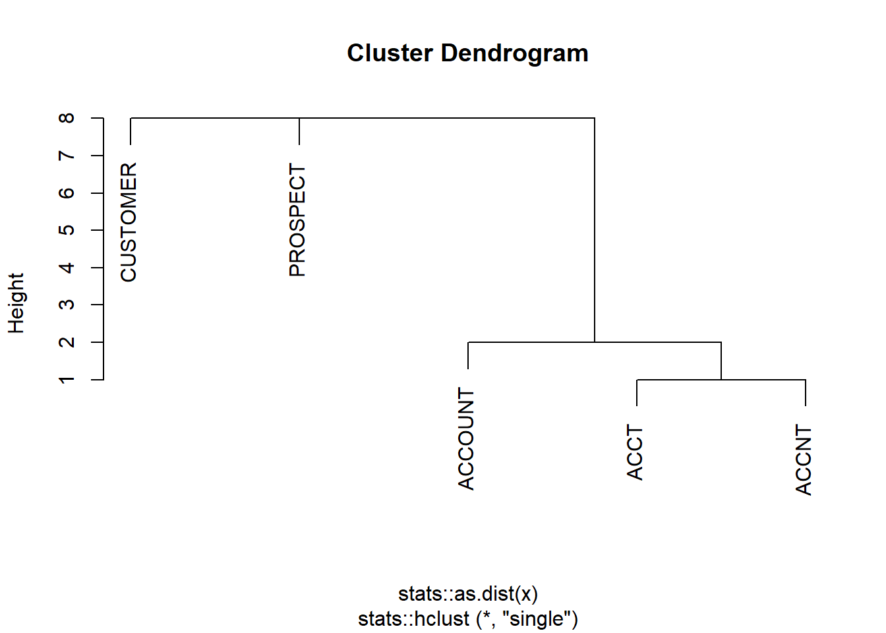
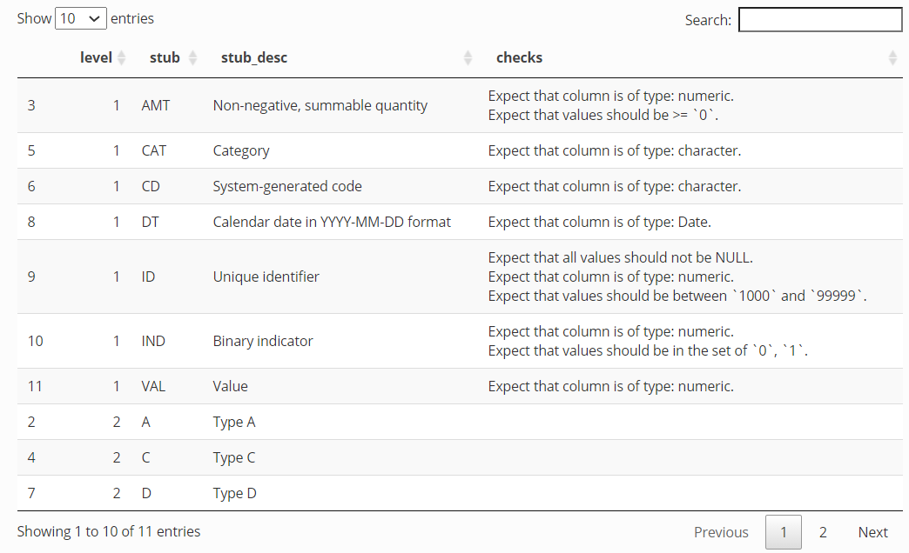

library(convo)Back in September, I wrote about how controlled vocabularies can help form contracts between data producers and consumers. In short, I argued that aligning on an ontology of stub names for use naming variables in a dataset can improve data documentation, validation, and wrangling with minimal overhead.
However, all of these benefits assume absolute consistency in the use of the controlled vocabulary. As soon as typos creep into variable names or fields violate the supposed data validation checks that their stubs promise, these vocabularies become more of a liability than an asset by luring data consumers into complacency.
I’m pleased to announced the experimental convo package to enable the definition and application of controlled vocabularies. In this post, I briefly describe the key features. Please see the package website for full documentation.
Defining your vocabulary
convo uses a YAML specification to define controlled vocabularies. Stubs are defined at each level which can optionally take on additional fields such as desc (a human-readable description), valid (which specifies pointblank-style data validation checks), and rename (which specifies how variable names should change under certain computations).
filepath <- system.file("", "ex-convo.yml", package = "convo")
cat(readLines(filepath), sep = "\n")level1:
ID:
desc: Unique identifier
valid:
- col_vals_not_null()
- col_is_numeric()
- col_vals_between(1000, 99999)
IND:
desc: Binary indicator
valid:
- col_is_numeric()
- col_vals_in_set(c(0,1))
rename:
- when: SUM
then: 'N'
- when: AVG
then: P
AMT:
desc: Non-negative, summable quantity
valid:
- col_is_numeric()
- col_vals_gte(0)
VAL:
desc: Value
valid:
- col_is_numeric()
rename:
- when: AVG
then: VALAV
CAT:
desc: Category
valid:
- col_is_character()
CD:
desc: System-generated code
valid:
- col_is_character()
DT:
desc: Calendar date in YYYY-MM-DD format
valid:
- col_is_date()
level2:
A:
desc: Type A
C:
desc: Type C
D:
desc: Type D
level3:
"\\d{4}": []We can read this into R and retrieve a brief summary. Note that in this case the third-level stub allows for a regular expression to be used.
convo <- read_convo(filepath)
print(convo)Level 1
- ID
- IND
- AMT
- VAL
- CAT
- CD
- DT
Level 2
- A
- C
- D
Level 3
- \d{4}Alternatively, you may define a convo as a simple R list object (as shown when bad_convo is defined in the following two examples.)
Assessing vocabulary quality
Good features of a vocabulary stubs include monosemy (having only one meaning) and unique (being the only thing to mean that thing). Functions pivot_convo() and cluster_convo() help us spot deviations from these two properties. To illustrate these functions, I’ll use a different convo than above since that one exhibits both monosemy and uniqueness already.
pivot_convo() allows us to obtain all of the level indices at which each stub appears. When the repeats_only argument is set to the default value TRUE, this function only returns stubs that exist at multiple levels, thus violating monsemy. For example, this function could help us realize that we had used the stub “CAT” to refer both to a categorical variable and an animal.
bad_convo <- list(c("IND", "AMT", "CAT"), c("DOG", "CAT"))
pivot_convo(bad_convo)$CAT
[1] 1 2Similarly, cluster_convo() attempts to catch errors in uniqueness by clustering stubs based on string similarity. This can highlight similar but distinct stubs, which might arise when a common word or concept is abbreviated in different ways. In the following example, “ACCOUNT”, “ACCT”, and “ACCNT” are closely clustered in the second level, which might help us realize that all three are intended to represent a customer’s account.
bad_convo <- list(c("IND", "IS", "AMT", "AMOUNT", "CAT", "CD"),
c("ACCOUNT", "ACCT", "ACCNT", "PROSPECT", "CUSTOMER"))
clusts <- cluster_convo(bad_convo)
plot(clusts[[2]])
Evaluating variable names
Having defined a convo, we can next use it to evaluate variable names. The evaluate_convo() function accepts a convo object and a set of names in a vector. It returns any variable names that violate the controlled vocabulary, listed at the specific level in which the violation occurs.
col_names <- c("ID_A", "IND_A", "XYZ_D", "AMT_B", "AMT_Q", "ID_A_1234", "ID_A_12")
evaluate_convo(convo, col_names, sep = "_")Level 1
- XYZ_D
Level 2
- AMT_B
- AMT_Q
Level 3
- ID_A_12If a large number of violations occur, it might be more useful to directly retrieve all of the stubs existing in variable names that are not part of the convo. To do this, we can use set operators available in the compare_convo() function to examing the unions, intersections, and set differences between our controlled vocabulary and our variable names. Doing so might inspire new candidate stubs that ought to be included in our controlled vocabulary.
convo_colnames <- parse_stubs(col_names)
compare_convo(convo_colnames, convo, fx = "setdiff")Level 1
- XYZ
Level 2
- B
- Q
Level 3
- 12If desired, newly uncovered stubs can be added to the convo object in R with the add_convo_stub() function:
convo2 <- add_convo_stub(convo, level = 2, stub = "B", desc = "Type B")
convo2 Level 1
- ID
- IND
- AMT
- VAL
- CAT
- CD
- DT
Level 2
- A
- C
- D
- B
Level 3
- \d{4}Currently, there is not support for editing the YAML specification via R function. New stubs would need to be added manually. However, a completely new YAML file can be created with the write_convo() function. This is particularly useful if you are creating a controlled vocabulary for the first time based on an existing set of variables names. First, you may parse them with parse_stubs() to create a minimal controlled vocabulary (stubs without descriptions, validation checks, etc.) and then you may write this to a draft YAML file for further customization.
Validating data fields
The validation checks specified with pointblank verbs in your YAML file can be used to create either a pointblank agent or a pointblank YAML file which can be used to consistently apply all of the promised data checks.
The pointblank YAML file may be created with the write_pb():
write_pb(convo, c("IND_A", "AMT_B"), filename = "convo-validation.yml")cat(readLines("convo-validation.yml"), sep = "\n")read_fn: ~setNames(as.data.frame(matrix(1, ncol = 2)), c("IND_A", "AMT_B"))
tbl_name: ~
label: '[2021-02-09|05:57:05]'
locale: en
steps:
- col_is_numeric:
columns: matches("^([A-Za-z]_){0}IND")
- col_vals_in_set:
columns: matches("^([A-Za-z]_){0}IND")
set:
- 0.0
- 1.0
- col_is_numeric:
columns: matches("^([A-Za-z]_){0}AMT")
- col_vals_gte:
columns: matches("^([A-Za-z]_){0}AMT")
value: 0.0Alternatively, a validation agent can be created directly with create_pb_agent():
data_to_validate <- data.frame(IND_A = 1, IND_B = 5, DT_B = as.Date("2020-01-01"))
agent <- create_pb_agent(convo, data_to_validate)
pointblank::interrogate(agent)Document fiels and vocabularies
convo also offers preliminary support for documentation.
Basic data dictionaries may be created with describe_names() which attempts to create definitions for fields based on a user-provided glue string and YAML-specified stub definitions.
vars <- c("AMT_A_2019", "IND_C_2020")
desc_df <- describe_names(vars, convo, desc_str = "{level1} of {level2} in given year")
DT::datatable(desc_df)
Alternatively, the entire controlled vocabulary may be put into a dictionary.
desc_df <- describe_convo(convo, include_valid = TRUE, for_DT = TRUE)
DT::datatable(desc_df, escape = FALSE)
(The tables actually look much nicer when displayed with the full power of DT, which also allows for interactive filtering and sorting. Unfortunately, the Javascript behind DT causes a weird conflict with my static site generator weird interactions with my blog theme, so I just show screenshots here.)
Open issues
convo is still very experimental and there are many open questions. Currently, I’m debating many aspects of convo specification including:
- What other formats should be allowed for defining a controlled vocabulary? Should there be a spreadsheet/CSV-based format? More support for constructing the object in R directly?
- Currently, the separators between levels are specified in the function calls.
- Should this be part of the
convoobject instead? - Should there be support for varying selectors at different levels (e.g. this would generalize better to using
convoto validate file names with/delimiting directories and subdirectories and_or-used in parts of file names)
- Should this be part of the
convoassumes prefix-based schemes with names start and “grow” from the beginning. Should suffix-based scheme be supported?- One on hand, this provides significantly more flexibility
- On the other hand, I do strongly believe there are advantages to prefixed-based names (e.g. autocomplete, related concepts clustering when sorted) and any additional flexibility will make the initial specification increasingly gnarly for users
- Should specification allow truly hierarchical naming structures where allowed stubs at level
n+1vary by the stub at leveln? - Should it be possible to mark some levels are required? Currently, no levels may be “skipped” but if five levels are specified, the software permits derived names of lengths fewer or greater than 5 (so long as any existing levels 1-5 follow the format)
- Would it be useful to be able to programmatically edit the YAML file specification within R? What is the use case for this?
- Currently, the
describefunction family is rather primitive. I hope to make this more aesthetic or integrate more deeply withpointblank
If you are interested, please take the package for a spin and do not hesitate to get in touch about these issues or any other ideas you have! Seeing more use cases beyond my own helps me understand which of these ideas add value versus unneccesary bloat and confusion.